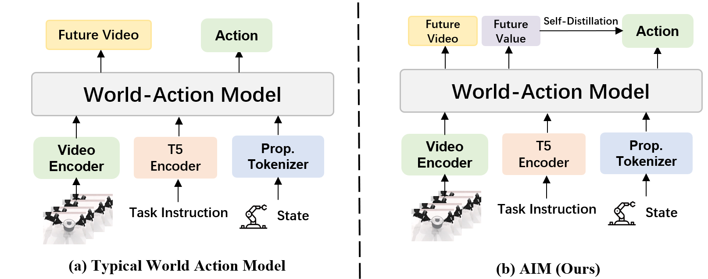
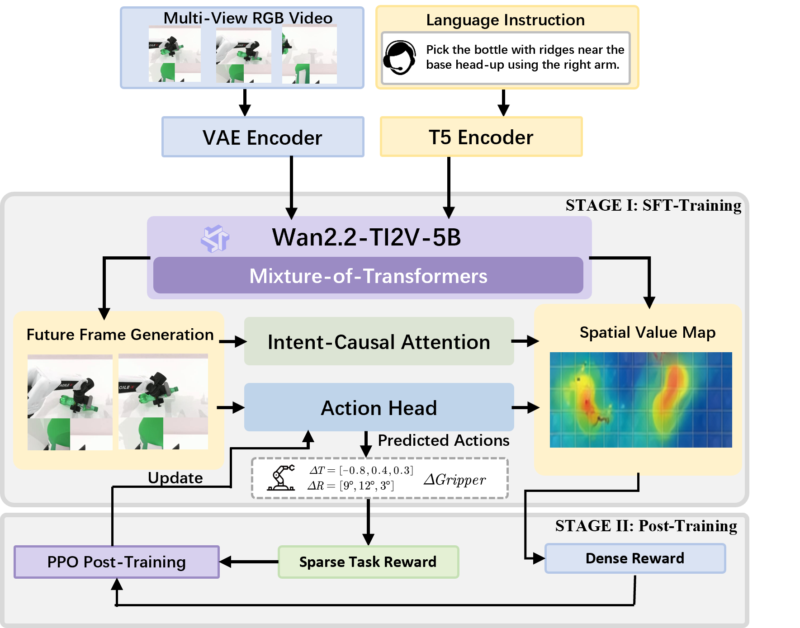

<!DOCTYPE html>
<html lang="zh-CN">
<head>
  <meta charset="UTF-8">
  <meta name="viewport" content="width=device-width, initial-scale=1.0">
  <title>AIM: Intent-Aware Unified world action Modeling with Spatial Value Maps - 精读报告</title>
  <script>
    window.MathJax = { tex: { inlineMath: [['$', '$'], ['\(', '\)']], displayMath: [['$$', '$$'], ['\[', '\]']] }, svg: { fontCache: 'global' } };
  </script>
  <script defer src="https://cdn.jsdelivr.net/npm/mathjax@3/es5/tex-svg.js"></script>

<link rel="preconnect" href="https://fonts.googleapis.com">
<link rel="preconnect" href="https://fonts.gstatic.com" crossorigin>
<link href="https://fonts.googleapis.com/css2?family=Sora:wght@300;400;500;600;700&family=Geist+Mono:wght@400;500;600&display=swap" rel="stylesheet">
  <style>
    :root {
      --paper: #f6f7f3;
      --paper-deep: #e8ede7;
      --surface: #fffefb;
      --surface-raised: rgba(255, 254, 251, 0.9);
      --surface-2: #f0f4ee;
      --ink: #20241f;
      --ink-soft: #3a4038;
      --muted: #697166;
      --muted-2: #838a7f;
      --line: rgba(32, 29, 25, 0.12);
      --line-strong: rgba(32, 29, 25, 0.22);
      --state: #2f766f;
      --state-soft: #e6f0ed;
      --action: #a45f38;
      --action-soft: #f3e8dd;
      --planning: #4f6542;
      --planning-soft: #e7eddf;
      --warn: #9a6a21;
      --warn-soft: #f3ead8;
      --font-body: "Sora", "PingFang SC", "Noto Sans SC", system-ui, sans-serif;
      --font-mono: "Geist Mono", "SFMono-Regular", Menlo, monospace;
      --sidebar-w: 188px;
      --content-max: 1080px;
      --desktop-gutter: 2.6rem;
    }
    *,
    *::before,
    *::after { box-sizing: border-box; }
    html { scroll-behavior: smooth; }
    body {
      margin: 0;
      min-height: 100vh;
      background:
        linear-gradient(90deg, rgba(32, 29, 25, 0.035) 1px, transparent 1px),
        linear-gradient(180deg, rgba(32, 29, 25, 0.03) 1px, transparent 1px),
        var(--paper);
      background-size: 32px 32px;
      color: var(--ink);
      font-family: var(--font-body);
      font-size: 15px;
      line-height: 1.75;
      -webkit-font-smoothing: antialiased;
      -moz-osx-font-smoothing: grayscale;
    }
    main {
      width: min(100%, var(--content-max));
      margin: 0 auto;
      padding: 2.4rem 1.15rem 5.6rem;
      min-height: 100vh;
    }
    h1 {
      max-width: 900px;
      margin: 0 0 1rem;
      color: var(--ink);
      font-size: clamp(1.75rem, 3.6vw, 3.7rem);
      font-weight: 650;
      line-height: 0.98;
      letter-spacing: 0;
    }
    h2 {
      margin: 0 0 1rem;
      color: var(--ink);
      font-size: clamp(1.55rem, 3vw, 2.7rem);
      font-weight: 650;
      line-height: 1.08;
      letter-spacing: 0;
    }
    h3 {
      margin: 1.8rem 0 0.55rem;
      color: var(--ink);
      font-size: 1.08rem;
      font-weight: 650;
      line-height: 1.35;
    }
    h4 {
      margin: 1.35rem 0 0.45rem;
      color: var(--ink-soft);
      font-size: 0.95rem;
      font-weight: 650;
      line-height: 1.35;
    }
    p { margin: 0.65rem 0; }
    a {
      color: var(--state);
      text-decoration: none;
      text-underline-offset: 0.18em;
    }
    a:hover { text-decoration: underline; }
    code {
      padding: 0.12rem 0.32rem;
      background: rgba(47, 118, 111, 0.08);
      border: 1px solid rgba(47, 118, 111, 0.12);
      border-radius: 4px;
      color: var(--ink);
      font-family: var(--font-mono);
      font-size: 0.86em;
    }
    header {
      padding: 1rem 0 2.5rem;
      border-bottom: 1px solid var(--line);
      margin-bottom: 1.2rem;
    }
    header::before {
      display: inline-flex;
      align-items: center;
      min-height: 1.7rem;
      margin-bottom: 1rem;
      padding: 0.25rem 0.55rem;
      border: 1px solid rgba(32, 29, 25, 0.13);
      border-radius: 999px;
      background: rgba(255, 254, 251, 0.68);
      color: var(--state);
      content: "paper report";
      font-family: var(--font-mono);
      font-size: 0.68rem;
      font-weight: 600;
      letter-spacing: 0.08em;
      text-transform: uppercase;
    }
    .meta {
      display: grid;
      gap: 0.35rem;
      max-width: 900px;
      background: linear-gradient(180deg, var(--surface-raised), rgba(255, 254, 251, 0.72));
      border: 1px solid var(--line);
      border-radius: 8px;
      box-shadow: 0 18px 55px rgba(55, 63, 48, 0.08);
      padding: 1rem 1.05rem;
      color: var(--muted);
    }
    .meta p {
      margin: 0;
      font-size: 0.86rem;
      line-height: 1.62;
    }
    .meta strong {
      color: var(--ink);
      font-weight: 650;
    }
    .title-wrap {
      display: grid;
      gap: 0.75rem;
      max-width: 900px;
    }
    .subtitle,
    .lead {
      max-width: 860px;
      color: var(--muted);
      font-size: 0.98rem;
      line-height: 1.72;
    }
    .lead {
      padding: 1rem 1.05rem;
      background: linear-gradient(180deg, var(--state-soft), rgba(255, 254, 251, 0.74));
      border: 1px solid rgba(47, 118, 111, 0.2);
      border-radius: 8px;
      color: var(--ink-soft);
    }
    .title-wrap .meta {
      display: flex;
      flex-wrap: wrap;
      gap: 0.45rem;
      box-shadow: none;
    }
    .pill {
      display: inline-flex;
      align-items: center;
      min-height: 1.7rem;
      padding: 0.2rem 0.55rem;
      border: 1px solid rgba(32, 29, 25, 0.13);
      border-radius: 999px;
      background: rgba(255, 254, 251, 0.72);
      color: var(--muted);
      font-family: var(--font-mono);
      font-size: 0.68rem;
      font-weight: 600;
      line-height: 1.25;
    }
    .toc {
      background: rgba(255, 254, 251, 0.84);
      border: 1px solid var(--line);
      border-radius: 8px;
      padding: 0.95rem;
      margin: 1.2rem 0 1.6rem;
      backdrop-filter: blur(12px);
    }
    .toc strong {
      display: block;
      margin-bottom: 0.35rem;
      color: var(--ink);
      font-family: var(--font-mono);
      font-size: 0.72rem;
      font-weight: 600;
      letter-spacing: 0.08em;
      text-transform: uppercase;
    }
    .toc ul,
    ul.toc,
    ol.toc {
      display: grid;
      grid-template-columns: repeat(2, minmax(0, 1fr));
      gap: 0.12rem 0.35rem;
      margin: 0;
      padding: 0;
      list-style: none;
    }
    .toc li { min-width: 0; }
    .toc a {
      display: block;
      padding: 0.42rem 0.52rem;
      border-radius: 6px;
      color: var(--muted);
      font-size: 0.82rem;
      line-height: 1.38;
    }
    .toc a:hover {
      background: rgba(47, 118, 111, 0.08);
      color: var(--ink);
      text-decoration: none;
    }
    .tldr {
      background: linear-gradient(180deg, var(--action-soft), rgba(255, 254, 251, 0.74));
      border: 1px solid rgba(164, 95, 56, 0.22);
      border-radius: 8px;
      padding: 1rem 1.05rem;
      margin: 1rem 0 1.1rem;
      color: var(--ink-soft);
      font-size: 0.98rem;
      line-height: 1.72;
    }
    .grid {
      display: grid;
      grid-template-columns: repeat(2, minmax(0, 1fr));
      gap: 0.85rem;
    }
    .grid.three {
      grid-template-columns: repeat(3, minmax(0, 1fr));
    }
    .note, .audit-card, .formula-block, .card, .danger {
      background: var(--surface-raised);
      border: 1px solid var(--line);
      border-radius: 8px;
      box-shadow: 0 14px 42px rgba(55, 63, 48, 0.055);
      padding: 0.95rem 1rem;
      margin: 0.85rem 0;
    }
    .card {
      margin: 0;
    }
    .danger {
      background: linear-gradient(180deg, var(--warn-soft), rgba(255, 254, 251, 0.78));
      border-color: rgba(154, 106, 33, 0.22);
    }
    .kpi {
      color: var(--ink);
      font-family: var(--font-mono);
      font-size: clamp(1.35rem, 2.8vw, 2.15rem);
      font-weight: 700;
      line-height: 1;
    }
    .kpi-label {
      margin-top: 0.45rem;
      color: var(--muted);
      font-size: 0.82rem;
      line-height: 1.5;
    }
    .note strong { color: var(--ink); }
    .appendix-ref {
      color: var(--planning);
      background: var(--planning-soft);
      border: 1px solid rgba(79, 101, 66, 0.18);
      border-radius: 999px;
      padding: 0.08rem 0.38rem;
      font-family: var(--font-mono);
      font-size: 0.74rem;
      font-weight: 600;
      white-space: nowrap;
    }
    .formula-block .intuition {
      font-weight: 650;
      color: var(--state);
      margin-bottom: 8px;
    }
    .symbol-table td:first-child {
      width: 26%;
      color: var(--state);
      font-family: var(--font-mono);
      font-weight: 600;
    }
    section {
      padding: 3rem 0;
      border-bottom: 1px solid var(--line);
      scroll-margin-top: 1.4rem;
    }
    section:last-child { border-bottom: none; }
    section > h2 {
      max-width: 760px;
      margin-right: auto;
      margin-left: auto;
      text-align: center;
    }
    section > h2::before {
      display: block;
      margin-bottom: 0.45rem;
      color: var(--state);
      content: "section";
      font-family: var(--font-mono);
      font-size: 0.68rem;
      font-weight: 600;
      letter-spacing: 0.1em;
      line-height: 1.4;
      text-transform: uppercase;
    }
    figure,
    .figure {
      margin: 1.35rem auto;
      text-align: center;
    }
    figure img,
    .figure img,
    .pdf-frame {
      display: block;
      max-width: 100%;
      max-height: min(72vh, 760px);
      margin: 0 auto;
      background: white;
      border: 1px solid var(--line);
      border-radius: 8px;
      box-shadow: 0 18px 50px rgba(55, 63, 48, 0.08);
    }
    .pdf-frame {
      width: auto;
      height: auto;
    }
    figcaption,
    .caption {
      max-width: 920px;
      margin: 0.65rem auto 0;
      color: var(--muted);
      font-size: 0.82rem;
      line-height: 1.6;
      text-align: center;
    }
    table {
      width: 100%;
      overflow: hidden;
      border-collapse: separate;
      border-spacing: 0;
      margin: 1rem 0 1.25rem;
      background: var(--surface-raised);
      border: 1px solid var(--line);
      border-radius: 8px;
      box-shadow: 0 14px 42px rgba(55, 63, 48, 0.045);
      font-size: 0.88rem;
    }
    th, td {
      border-right: 1px solid var(--line);
      border-bottom: 1px solid var(--line);
      padding: 0.62rem 0.68rem;
      vertical-align: top;
      text-align: left;
    }
    th:last-child,
    td:last-child { border-right: none; }
    tbody tr:last-child td { border-bottom: none; }
    th {
      background: var(--surface-2);
      color: var(--ink);
      font-family: var(--font-mono);
      font-size: 0.76rem;
      font-weight: 600;
    }
    tbody tr:nth-child(even) td { background: rgba(240, 244, 238, 0.45); }
    ul, ol { padding-left: 1.25rem; }
    li { margin: 0.35rem 0; }
    .best { font-weight: 650; color: var(--state); }
    .warn { color: var(--warn); font-weight: 650; }
    .pseudocode {
      background: #20241f;
      color: #eef2e7;
      border: 1px solid rgba(255, 254, 251, 0.12);
      border-radius: 8px;
      padding: 1rem 1.05rem;
      overflow-x: auto;
      font-family: var(--font-mono);
      font-size: 0.82rem;
      line-height: 1.58;
      margin: 0.9rem 0;
    }
    pre {
      max-width: 100%;
      overflow-x: auto;
      margin: 0.9rem 0;
      padding: 1rem 1.05rem;
      background: #20241f;
      border: 1px solid rgba(255, 254, 251, 0.12);
      border-radius: 8px;
      color: #eef2e7;
      font-family: var(--font-mono);
      font-size: 0.82rem;
      line-height: 1.58;
    }
    pre code {
      padding: 0;
      background: transparent;
      border: 0;
      color: inherit;
      font: inherit;
    }
    article {
      display: block;
    }
    .small {
      color: var(--muted-2);
      font-size: 0.78rem;
      line-height: 1.55;
    }
    .checklist li { margin: 5px 0; }
    @media (min-width: 980px) {
      main {
        width: min(100%, calc(var(--content-max) + var(--sidebar-w) + var(--desktop-gutter)));
        margin: 0;
        padding: 3.2rem var(--desktop-gutter) 6rem calc(var(--sidebar-w) + var(--desktop-gutter));
      }
      .toc {
        position: fixed;
        inset: 0 auto 0 0;
        z-index: 50;
        width: var(--sidebar-w);
        min-height: 100vh;
        margin: 0;
        padding: 2.25rem 1.25rem;
        border-width: 0 1px 0 0;
        border-radius: 0;
        background: rgba(246, 247, 243, 0.9);
        box-shadow: none;
      }
      .toc strong::before {
        display: inline-flex;
        align-items: center;
        justify-content: center;
        width: 2rem;
        height: 2rem;
        margin-right: 0.55rem;
        border-radius: 7px;
        background: var(--ink);
        color: var(--paper);
        content: "R";
        font-family: var(--font-body);
        font-size: 0.75rem;
        font-weight: 700;
        letter-spacing: 0;
      }
      .toc ul,
      ul.toc,
      ol.toc {
        grid-template-columns: 1fr;
        margin-top: 1.35rem;
      }
      .toc a {
        padding: 0.62rem 0.7rem;
        font-size: 0.84rem;
      }
    }
    @media (max-width: 760px) {
      main { padding: 1.35rem 0.9rem 4rem; }
      h1 { font-size: 1.85rem; }
      section { padding: 2.2rem 0; }
      .toc ul, ul.toc, ol.toc { grid-template-columns: 1fr; }
      .grid { grid-template-columns: 1fr; }
      .grid.three { grid-template-columns: 1fr; }
      table {
        display: block;
        overflow-x: auto;
        font-size: 0.82rem;
      }
      th, td { padding: 0.55rem; }
    }
  </style>
</head>
<body>
<main>
<header>
  <h1>AIM: Intent-Aware Unified world action Modeling with Spatial Value Maps</h1>
  <div class="meta">
    <p><strong>作者：</strong>Liaoyuan Fan, Zetian Xu, Chen Cao, Wenyao Zhang, Mingqi Yuan, Jiayu Chen</p>
    <p><strong>机构：</strong>INFIFORCE Intelligent Technology Co., Ltd.; The University of Hong Kong; Shanghai Jiao Tong University</p>
    <p><strong>发表：</strong>arXiv preprint / NeurIPS 2025 template，源码版本 2026-03-23</p>
    <p><strong>arXiv：</strong><a href="https://arxiv.org/abs/2604.11135">2604.11135</a> | <strong>PDF：</strong><a href="https://arxiv.org/pdf/2604.11135">下载</a></p>
  </div>
</header>

<nav class="toc">
  <strong>目录</strong>
  <ul>
    <li><a href="#s1">1. 论文速览</a></li><li><a href="#s2">2. 动机</a></li><li><a href="#s3">3. 相关工作梳理</a></li>
    <li><a href="#s4">4. 方法详解</a></li><li><a href="#s5">5. 实验</a></li><li><a href="#s7">7. 分析、局限与边界</a></li>
  </ul>
</nav>
<h2 id="s1">1. 论文速览</h2>
<div class="tldr"><strong>一句话总结：</strong>AIM 用“未来 RGB + 空间 value map + 动作”的统一生成式世界-动作模型，把视频生成模型的未来想象能力转化为机器人控制中“在哪里交互”的显式空间线索，并在 RoboTwin 2.0 上取得 94.0% / 92.1% 的 Easy / Hard 平均成功率。</div>
<table>
<tr><th>阅读定位</th><th>内容</th></tr>
<tr><td>论文要解决什么</td><td>已有 unified world action model 能预测未来画面，但动作解码仍要从密集 RGB latent 中隐式恢复接触位置和操作意图，导致机器人域适配成本高。</td></tr>
<tr><td>作者的方法抓手</td><td>引入与未来帧对齐的 action-based spatial value map，作为未来视觉预测与动作解码之间的显式空间接口。</td></tr>
<tr><td>最重要的结果</td><td>RoboTwin 2.0 的 50 个仿真任务上，AIM 达到 Easy 94.0%、Hard 92.1%，平均 93.1%，高于 Stage1 的 92.5% 和外部 baselines。</td></tr>
<tr><td>阅读时要注意的点</td><td>核心不是“多加一个 heatmap 监督”，而是用 intent-causal attention 强制 action branch 只能通过 value map 读取未来信息。</td></tr>
</table>
<p><strong>难度评级：</strong>★★★★☆。需要理解 video diffusion / flow matching、Transformer attention mask、VLA / world-action model，以及 RL post-training 中 PPO/GRPO 类目标。</p>
<p><strong>关键词：</strong>Unified World Action Model；Spatial Value Map；Intent-Causal Attention；Mixture-of-Transformers；GRPO Post-Training；RoboTwin 2.0。</p>
<h3>核心贡献清单</h3>
<ul>
  <li><strong>Intent-aware unified world action model：</strong>在未来预测和动作解码之间加入空间 value-map 接口，使模型显式表示任务相关交互结构。</li>
  <li><strong>Spatially grounded control training framework：</strong>把 joint frame-value generation、intent-causal attention 和 self-distillation RL post-training 放进同一框架。</li>
  <li><strong>30K 仿真轨迹数据集：</strong>构造含多视角视频、动作序列、任务标识和逐步 value-map 标注的数据，用于训练与评估。</li>
  <li><strong>RoboTwin 2.0 性能：</strong>在 50 个仿真任务的 Easy / Hard 设置上分别达到 94.0% / 92.1% 平均 SR。</li>
</ul>
<p><span class="appendix-ref">附录状态</span> 源码中未发现 Appendix / Supplementary section；本报告所有内容均来自正文、图表和参考文献文件。</p>

<h2 id="s2">2. 动机</h2>
<h3>2.1 要解决什么问题</h3>
<p>论文关注的核心问题是：如何把大规模视频生成模型学到的视觉动态先验，可靠地转化为接触密集机器人操作中的连续动作。视频模型擅长回答“场景接下来长什么样”，但机器人控制还需要回答“末端执行器应该接触哪里、为什么这个位置对任务有用”。在抓取、放置、按压、扫描、开关等任务中，这类信息通常是稀疏的接触区域，而 RGB future latent 包含大量外观细节。</p>
<p>作者指出，已有统一世界-动作模型通常让 action head 直接从共享的未来视觉表示中解码动作。这会迫使模型从密集视觉表示里隐式恢复 manipulation intent；对 cluttered scene 或 contact-sensitive task 来说，这个逆动力学问题更难。</p>
<h3>2.2 已有方法的局限</h3>
<ul>
  <li><strong>传统 VLA：</strong>直接从 observation + language 到 action，能够模仿示范，但不显式建模动作如何改变未来观测。</li>
  <li><strong>两阶段 WAM：</strong>先预测未来状态，再交给 action model；未来状态与动作解码之间缺少可控、显式的交互接口。</li>
  <li><strong>一阶段 WAM：</strong>未来状态预测与动作预测共享 observation stream；action head 仍需要从 dense RGB future 中抽取稀疏动作线索。</li>
  <li><strong>空间 grounding 方法：</strong>已有工作证明可操作区域、voxel-aligned action space 等对 manipulation 有用，但通常作为独立 policy head 或感知模块，没有直接嵌入 generative world-action model。</li>
</ul>
<div class="figure"><div class="caption">Figure 1：典型 unified WAM 直接从 future visual representation 解码动作；AIM 在中间加入 spatial value-map interface。</div></div>
<h3>2.3 本文的解决思路</h3>
<p>AIM 的高层 insight 是：让模型先把未来视觉动态压缩成“与任务相关的空间交互区域”，再让动作头基于这个空间表示生成动作。也就是说，future RGB 用于建模世界怎么演化，value map 用于表达未来交互意图，action head 只通过 value map 接收未来信息。</p>

<h2 id="s3">3. 相关工作梳理</h2>
<h3>3.1 论文自述的相关工作</h3>
<table>
<tr><th>技术线</th><th>论文如何定位</th><th>AIM 的区别</th></tr>
<tr><td>Video generation for robot learning</td><td>DreamZero、VPP、Video Generators 等工作把 pretrained video generator 当作机器人学习的视觉动态先验。</td><td>AIM 采用 Wan2.2-TI2V-5B 作为 video backbone，但增加 value-map 预测和动作分支。</td></tr>
<tr><td>Unified world action model</td><td>LingBot-VA、GigaWorld-Policy、Fast-WAM、DreamZero 等把未来观测和动作放进统一架构。</td><td>AIM 不让动作直接依赖 future RGB，而加入显式 spatial intermediate interface。</td></tr>
<tr><td>Spatially grounded representations</td><td>Where2Act、PerAct、CLIPort、CALAMARI 等强调 interaction region / spatial grounding 对 manipulation 的作用。</td><td>AIM 把 spatial value prediction 直接集成进 generative world-action model，而不是独立感知或策略头。</td></tr>
</table>
<h3>3.2 直接前作对比</h3>
<table>
<tr><th>维度</th><th>LingBot-VA</th><th>GigaWorld-Policy / Fast-WAM</th><th><strong>AIM</strong></th></tr>
<tr><td>核心思路</td><td>在共享 latent space 中学习视频预测与动作生成。</td><td>强调 action-centered 或 efficient world-action modeling。</td><td>联合预测 future RGB、future value map 和 future action。</td></tr>
<tr><td>关键假设</td><td>共享视觉 latent 足以服务动作解码。</td><td>world-action cotraining 可提升策略。</td><td>动作需要显式空间意图表示，不能只靠 dense future RGB。</td></tr>
<tr><td>信息流</td><td>动作可从共享未来表示取信息。</td><td>依具体模型设计而定，通常没有 value-map 门控。</td><td>intent-causal attention 让 action branch 不能直接看 future RGB。</td></tr>
<tr><td>实验性能</td><td>RoboTwin 平均 SR 92.2%。</td><td>Fast-WAM 91.8%，Giga-World 86.0%。</td><td>RoboTwin 平均 SR 93.1%。</td></tr>
</table>

<h2 id="s4">4. 方法详解</h2>
<h3>4.1 方法概览</h3>
<p>AIM 的输入是历史窗口 $\mathcal{H}_t=\{o_{t-k:t}, a_{t-k:t-1}\}$，其中 $o_t$ 是同步多视角观测，$a_t$ 是机器人动作。模型输出 horizon-$h$ 的 future RGB frames $X^+$、future value maps $M^+$ 和 future actions $A^+$。</p>
<div class="figure"><div class="caption">Figure 2：AIM Stage I 同时学习 future frame generation、action prediction 和 spatial value map estimation；Stage II 用 sparse + dense rewards 做 GRPO。</div></div>
<div class="formula-block">
<p class="intuition">这个分解在说：先预测未来世界与空间意图，再基于空间意图生成动作。</p>
$$p(X^+, M^+, A^+ \mid \mathcal{H}_t)=p(X^+, M^+ \mid \mathcal{H}_t)\,p(A^+ \mid \mathcal{H}_t,M^+)$$
<table><tr><td>$X^+$</td><td>未来 RGB 帧序列，表示模型想象的未来视觉状态。</td></tr><tr><td>$M^+$</td><td>与未来帧空间对齐的 value map，编码任务相关交互区域。</td></tr><tr><td>$A^+$</td><td>未来连续机器人动作 chunk。</td></tr><tr><td>$\mathcal{H}_t$</td><td>历史观测、历史动作和语言指令构成的上下文。</td></tr></table>
</div>
<h3>4.2 方法演变脉络</h3>
<div class="note">传统 VLA：$o_t,c 
ightarrow a_t$，没有显式 future world modeling。</div>
<div class="note">Unified WAM：$\mathcal{H}_t 
ightarrow (X^+,A^+)$，把未来观测和动作合并预测，但 action head 仍要从 RGB future 中抽取意图。</div>
<div class="note">AIM：$\mathcal{H}_t 
ightarrow (X^+,M^+) 
ightarrow A^+$，用 spatial value map 作为动作解码的未来信息接口。</div>
<h3>4.3 核心设计与数学推导</h3>
<h4>4.3.1 Tokenization 与前缀构造</h4>
<p>三路输入分别是 packed RGB、packed ASVM 和连续动作。论文沿用 LingBot-VA 的多视角 packing：head camera 放在上方，左右 wrist camera 放在两侧，形成 T-pose canvas。</p>
<div class="formula-block"><p class="intuition">这个公式把 RGB 图像和 value map 都送进同一个 Wan2.2 VAE，使二者在 latent 空间几何对齐。</p>
$$z_t^o = E_{\mathrm{vae}}(	ilde x_t), \qquad z_t^m = E_{\mathrm{vae}}(	ilde m_t)$$
<table><tr><td>$	ilde x_t$</td><td>三视角拼接后的 RGB observation。</td></tr><tr><td>$	ilde m_t$</td><td>同样 T-pose layout 的 RGB ASVM。</td></tr><tr><td>$z_t^o,z_t^m$</td><td>VAE latent tokens；共享 VAE 避免重做视觉 tokenizer。</td></tr></table></div>
<div class="formula-block"><p class="intuition">这个公式把动作和语言也变成 token，以便进入 Transformer 框架。</p>
$$z_t^a=E_a(a_t),\qquad z^\ell=E_{\mathrm{t5}}(c)$$
<p>其中 $a_t\in\mathbb{R}^{d_a}$ 是双臂连续动作向量，$E_a$ 是轻量 MLP，$c$ 是语言指令。语言 token 只通过 cross-attention 注入 video model，不直接注入 action branch。</p></div>
<div class="formula-block"><p class="intuition">这个前缀定义了 rollout 时模型能看到的历史上下文。</p>
$$\mathcal{H}^{\mathrm{tok}}_t=[z_{t-k:t}^o,\,z_{t-k:t-1}^a,\,z^\ell]$$
<p>它同时包含近期观测、近期动作和任务语言，用于估计机器人状态与预测未来 chunk。</p></div>
<h4>4.3.2 Mixture-of-Transformers 三流架构</h4>
<p>模型包含 video generation model 与 action head。video branch 由 Wan2.2 初始化，用于 future RGB 与 value-map generation；action head 深度相同但 hidden width 更小，用于 action denoising。</p>
<div class="formula-block"><p class="intuition">rollout 开始时，三个未来 token stream 都从噪声开始，再逐步 denoise。</p>
$$\hat z_0^x,\hat z_0^m,\hat z_0^a\sim\mathcal{N}(0,I)$$
<p>value stream 还接收 learned value noise token $n^m$，实际输入为 $[\hat z_0^m,n^m]$。RGB 和 value map 沿同一 flow-matching trajectory denoise，action token 由 action head denoise。</p></div>
<div class="formula-block"><p class="intuition">每一路输出都由对应 decoder 还原为可解释对象。</p>
$$\hat X^+=D_x(z^x),\qquad \hat M^+=D_m(z^m),\qquad \hat A^+=D_a(z^a)$$
<table><tr><td>$D_x$</td><td>未来 RGB 解码器。</td></tr><tr><td>$D_m$</td><td>value-map 解码器。</td></tr><tr><td>$D_a$</td><td>连续动作解码器。</td></tr></table></div>
<div class="formula-block"><p class="intuition">MoT 的关键是：attention 共享交互，FFN 保持分支专用。</p>
$$Q_s^\ell=h_s^\ell W_{Q,s}^\ell,\quad K_s^\ell=h_s^\ell W_{K,s}^\ell,\quad V_s^\ell=h_s^\ell W_{V,s}^\ell,\quad s\in\{x,m,a\}$$
<p>每个 stream 先用自己的投影得到 Q/K/V，再投到共同 attention dimension 中做 masked shared self-attention，最后投回各自 hidden space 并走 branch-specific feed-forward。</p></div>
<div class="formula-block"><p class="intuition">训练目标同时约束未来视觉、空间意图和动作。</p>
$$\mathcal{L}=\mathcal{L}_{\mathrm{rgb}}+\lambda_m\mathcal{L}_{\mathrm{map}}+\lambda_a\mathcal{L}_{\mathrm{act}}$$
<p>$\mathcal{L}_{\mathrm{rgb}}$ 和 $\mathcal{L}_{\mathrm{map}}$ 监督 flow-matching velocity field；$\mathcal{L}_{\mathrm{act}}$ 监督 inverse-dynamics action prediction。</p></div>
<h4>4.3.3 Intent-Causal Self-Attention</h4>
<p>这是 AIM 的结构性约束：action token 不允许直接 attend future RGB token，只能通过 future value token 访问未来信息。</p>
<div class="formula-block"><p class="intuition">三个 visible token set 定义了每一路在 shared attention 中能看见什么。</p>
$$egin{aligned}
\mathcal{V}_x&=[z_t^o,z_{t-k:t-1}^o,z_{t-k:t-1}^a,z^\ell,z^x],\
\mathcal{V}_m&=[z_t^o,z_{t-k:t-1}^o,z^x,z^m],\
\mathcal{V}_a&=[z_t^o,z_{t-k:t-1}^a,z^m,z^a].
\end{aligned}$$
<table><tr><td>$\mathcal{V}_x$</td><td>future video 可看当前观测、历史观测/动作、语言和自身 future video token。</td></tr><tr><td>$\mathcal{V}_m$</td><td>future value map 可看当前/历史观测和 future video，使 value map 绑定到采样的未来状态。</td></tr><tr><td>$\mathcal{V}_a$</td><td>action 可看当前观测、历史动作、future value map 和自身 action token，但不能看 future RGB。</td></tr></table></div>
<div class="formula-block"><p class="intuition">masked attention 只从对应 visible set 取 K/V。</p>
$$	ilde h_s^\ell=\mathrm{Attn}(Q_s^\ell,K(\mathcal{V}_s),V(\mathcal{V}_s))$$
<p>因此任务语义先进入 video branch，future state 信息再汇入 value stream，action branch 最后只通过 value representation 接收 future information。</p></div>
<h4>4.3.4 Self-Distillation RL Post-Training</h4>
<p>Stage I 的监督学习让 action head 模仿数据集动作；Stage II 则在闭环环境中只更新 action head，冻结 video generator 和 value-map head，避免 future frame / value-map prediction 漂移。</p>
<div class="formula-block"><p class="intuition">dense reward 奖励动作落点是否落在模型自己预测的高 value 区域。</p>
$$r_t=\lambda_d r_t^{\mathrm{dense}}+\lambda_s r_t^{\mathrm{sparse}},\qquad r_t^{\mathrm{dense}}=M_t(\Pi(p_t))$$
<table><tr><td>$r_t^{\mathrm{sparse}}$</td><td>环境级任务成功或完成信号。</td></tr><tr><td>$p_t$</td><td>预测动作落点或末端执行器目标。</td></tr><tr><td>$\Pi(\cdot)$</td><td>相机投影函数，把 3D 目标投到图像平面。</td></tr><tr><td>$M_t$</td><td>冻结 value head 预测的 value map。</td></tr></table></div>
<div class="formula-block"><p class="intuition">GRPO 用 clipped ratio 限制 action head 的策略更新幅度。</p>
$$\mathcal{L}_{\mathrm{GRPO}}(\phi)=\mathbb{E}_t\left[\min\left(
ho_t(\phi)\hat A_t,\mathrm{clip}(
ho_t(\phi),1-\epsilon,1+\epsilon)\hat A_t
ight)
ight]$$
$$
ho_t(\phi)=rac{\pi_\phi(a_t\mid\mathcal{H}_t,m_{t+1:t+h})}{\pi_{\phi_{\mathrm{old}}}(a_t\mid\mathcal{H}_t,m_{t+1:t+h})}$$
<p>$\hat A_t$ 是基于 combined reward 的 advantage。作者称其为 self-distillation，因为冻结的 value head 在线指导 action head，不需要额外人工标签。</p></div>
<h3>4.4 实现要点（面向复现）</h3>
<ul>
  <li><strong>视觉输入：</strong>三视角合成 T-pose canvas，保持与 Wan2.2 视频 VAE 的输入接口兼容。</li>
  <li><strong>value-map 输入：</strong>初始化为纯黑图像，相当于 null value prior；通过 denoising 学出任务相关空间结构。</li>
  <li><strong>语言注入：</strong>T5 language token 只 cross-attend 到 video model；action head 的语言条件必须经过 world/value representation 间接传递。</li>
  <li><strong>attention mask：</strong>实现时必须保证 action token 对 future RGB token 不可见，否则会破坏论文的 intent-causal 约束。</li>
  <li><strong>推理效率：</strong>autoregressive chunk-wise rollout 支持 KV cache，只对新增真实观测和预测 token 重新计算注意力。</li>
  <li><strong>RL 稳定性：</strong>Stage II 冻结 video generation model 与 value-map head，只更新 action head。</li>
</ul>
<div class="pseudocode">Algorithm: AIM rollout
Input: history observations o[t-k:t], actions a[t-k:t-1], instruction c
1. Pack multi-view RGB into T-pose canvas x_tilde
2. Encode RGB/value/action/language tokens: z_o, z_m, z_a, z_l
3. Initialize future tokens z_x, z_m, z_a from Gaussian noise
4. Denoise RGB and value streams with video model
5. Apply intent-causal attention mask:
   action stream sees history action + current observation + future value, not future RGB
6. Decode X+, M+, A+
7. Execute action chunk; append new observation/action to KV-cached prefix</div>

<h2 id="s5">5. 实验</h2>
<h3>5.1 实验设置</h3>
<table>
<tr><th>项目</th><th>设置</th></tr>
<tr><td>数据集</td><td>30K RoboTwin 2.0 simulation trajectories；每条含同步多视角视频、动作序列、任务 ID、per-step value-map annotations。</td></tr>
<tr><td>任务</td><td>RoboTwin 2.0 的 50 个仿真 manipulation tasks，包含 Easy 与 Hard 两种设置。</td></tr>
<tr><td>Backbone</td><td>video generation model 初始化自 Wan2.2-TI2V-5B。</td></tr>
<tr><td>Baselines</td><td>$\pi_0$、$\pi_{0.5}$、X-VLA、Motus、Fast-WAM、Giga-World、LingBot-VA；另报告 Stage1 作为 RL 前监督模型。</td></tr>
<tr><td>指标</td><td>Success Rate (SR)，按任务成功率统计。</td></tr>
<tr><td>RL post-training</td><td>action head 从 Stage1 checkpoint 初始化；video generation model 和 value-map head 冻结。</td></tr>
<tr><td>硬件 / 超参数</td><td>正文未给出 GPU、训练时长、batch size、learning rate、$\lambda_m$、$\lambda_a$、$\lambda_d$、$\lambda_s$、GRPO clipping $\epsilon$ 的具体数值。</td></tr>
<tr><td>代码仓库</td><td>arXiv 页面与源码未提供官方 GitHub / project URL。</td></tr>
</table>
<h3>5.2 Value-map 标注流程</h3>
<table>
<tr><th>任务类型</th><th>标注来源</th><th>生成方式</th><th>含义</th></tr>
<tr><td>Pick</td><td>gripper 与目标物体有效抓取接触时的 contact surface point cloud。</td><td>用相机标定矩阵投影到图像平面，再做 Gaussian smoothing；核宽随相机参数和深度动态调整。</td><td>grasp affordance region，即末端执行器与目标物成功物理交互的空间区域。</td></tr>
<tr><td>Place</td><td>物体达到稳定放置状态时，抓取物与目标支撑面的 contact region。</td><td>以 center-of-mass velocity 小阈值检测 placement completion，再投影接触区域生成 heat map。</td><td>placement contact region，即满足放置目标时应接触环境的位置。</td></tr>
</table>
<h3>5.3 主要结果</h3>
<table>
<tr><th>Setting</th><th>$\pi_0$</th><th>$\pi_{0.5}$</th><th>X-VLA</th><th>Motus</th><th>Fast-WAM</th><th>Giga-World</th><th>LingBot-VA</th><th>Stage1</th><th>AIM</th></tr>
<tr><td>Easy</td><td>65.9%</td><td>82.7%</td><td>72.8%</td><td>88.7%</td><td>91.9%</td><td>87.0%</td><td>92.9%</td><td>93.0%</td><td><strong>94.0%</strong></td></tr>
<tr><td>Hard</td><td>58.4%</td><td>76.8%</td><td>72.8%</td><td>87.0%</td><td>91.8%</td><td>85.0%</td><td>91.6%</td><td>92.0%</td><td><strong>92.1%</strong></td></tr>
<tr><td>Average</td><td>62.2%</td><td>79.8%</td><td>72.8%</td><td>87.8%</td><td>91.8%</td><td>86.0%</td><td>92.2%</td><td>92.5%</td><td><strong>93.1%</strong></td></tr>
</table>
<p>逐列看，AIM 比 Motus 在 Easy / Hard 上分别高 +5.3% / +5.0%；比 $\pi_{0.5}$ 分别高 +11.3% / +15.3%。Stage1 已达 93.0% / 92.0%，Stage II RL 进一步到 94.0% / 92.1%，说明主要收益来自空间接口和监督训练，RL post-training 提供额外小幅提升。</p>
<details><summary>展开：50 个任务的 per-task SR 表</summary>
<table><tr><th>Task</th><th>$\pi_{0.5}$ Easy</th><th>$\pi_{0.5}$ Hard</th><th>X-VLA Easy</th><th>X-VLA Hard</th><th>Motus Easy</th><th>Motus Hard</th><th>Stage1 Easy</th><th>Stage1 Hard</th><th>AIM Easy</th><th>AIM Hard</th></tr><tr><td>Adjust Bottle</td><td>100%</td><td>99%</td><td>100%</td><td>99%</td><td>89%</td><td>93%</td><td>98%</td><td>99%</td><td>100%</td><td>100%</td></tr>
<tr><td>Beat Block Hammer</td><td>96%</td><td>93%</td><td>92%</td><td>88%</td><td>95%</td><td>88%</td><td>98%</td><td>100%</td><td>100%</td><td>100%</td></tr>
<tr><td>Blocks Ranking RGB</td><td>92%</td><td>85%</td><td>83%</td><td>83%</td><td>99%</td><td>97%</td><td>91%</td><td>77%</td><td>92%</td><td>77%</td></tr>
<tr><td>Blocks Ranking Size</td><td>49%</td><td>26%</td><td>67%</td><td>74%</td><td>75%</td><td>63%</td><td>47%</td><td>44%</td><td>47%</td><td>43%</td></tr>
<tr><td>Click Alarmclock</td><td>98%</td><td>89%</td><td>99%</td><td>99%</td><td>100%</td><td>100%</td><td>98%</td><td>99%</td><td>100%</td><td>100%</td></tr>
<tr><td>Click Bell</td><td>99%</td><td>66%</td><td>100%</td><td>100%</td><td>100%</td><td>100%</td><td>98%</td><td>99%</td><td>100%</td><td>100%</td></tr>
<tr><td>Dump Bin Bigbin</td><td>92%</td><td>97%</td><td>79%</td><td>77%</td><td>95%</td><td>91%</td><td>98%</td><td>100%</td><td>100%</td><td>100%</td></tr>
<tr><td>Grab Roller</td><td>100%</td><td>100%</td><td>100%</td><td>100%</td><td>100%</td><td>100%</td><td>98%</td><td>99%</td><td>100%</td><td>100%</td></tr>
<tr><td>Handover Block</td><td>66%</td><td>57%</td><td>73%</td><td>37%</td><td>86%</td><td>73%</td><td>92%</td><td>89%</td><td>93%</td><td>90%</td></tr>
<tr><td>Handover Mic</td><td>98%</td><td>97%</td><td>0%</td><td>0%</td><td>78%</td><td>63%</td><td>82%</td><td>82%</td><td>83%</td><td>81%</td></tr>
<tr><td>Hanging Mug</td><td>18%</td><td>17%</td><td>23%</td><td>27%</td><td>38%</td><td>38%</td><td>43%</td><td>43%</td><td>43%</td><td>42%</td></tr>
<tr><td>Lift Pot</td><td>96%</td><td>85%</td><td>99%</td><td>100%</td><td>96%</td><td>99%</td><td>98%</td><td>100%</td><td>100%</td><td>100%</td></tr>
<tr><td>Move Can Pot</td><td>51%</td><td>55%</td><td>89%</td><td>86%</td><td>34%</td><td>74%</td><td>99%</td><td>97%</td><td>100%</td><td>98%</td></tr>
<tr><td>Move Pillbottle Pad</td><td>84%</td><td>61%</td><td>73%</td><td>71%</td><td>93%</td><td>96%</td><td>97%</td><td>99%</td><td>97%</td><td>98%</td></tr>
<tr><td>Move Playingcard Away</td><td>96%</td><td>84%</td><td>93%</td><td>98%</td><td>100%</td><td>96%</td><td>98%</td><td>100%</td><td>100%</td><td>100%</td></tr>
<tr><td>Move Stapler Pad</td><td>56%</td><td>42%</td><td>78%</td><td>73%</td><td>83%</td><td>85%</td><td>91%</td><td>83%</td><td>92%</td><td>84%</td></tr>
<tr><td>Open Laptop</td><td>90%</td><td>96%</td><td>93%</td><td>100%</td><td>95%</td><td>91%</td><td>98%</td><td>100%</td><td>100%</td><td>100%</td></tr>
<tr><td>Open Microwave</td><td>34%</td><td>77%</td><td>79%</td><td>71%</td><td>95%</td><td>91%</td><td>83%</td><td>80%</td><td>83%</td><td>79%</td></tr>
<tr><td>Pick Diverse Bottles</td><td>81%</td><td>71%</td><td>58%</td><td>36%</td><td>90%</td><td>91%</td><td>99%</td><td>97%</td><td>100%</td><td>98%</td></tr>
<tr><td>Pick Dual Bottles</td><td>93%</td><td>63%</td><td>47%</td><td>36%</td><td>96%</td><td>90%</td><td>92%</td><td>90%</td><td>93%</td><td>91%</td></tr>
<tr><td>Place A2B Left</td><td>87%</td><td>82%</td><td>48%</td><td>49%</td><td>82%</td><td>79%</td><td>93%</td><td>91%</td><td>94%</td><td>92%</td></tr>
<tr><td>Place A2B Right</td><td>87%</td><td>84%</td><td>36%</td><td>36%</td><td>90%</td><td>87%</td><td>89%</td><td>89%</td><td>90%</td><td>88%</td></tr>
<tr><td>Place Bread Basket</td><td>77%</td><td>64%</td><td>81%</td><td>71%</td><td>91%</td><td>94%</td><td>92%</td><td>90%</td><td>93%</td><td>91%</td></tr>
<tr><td>Place Bread Skillet</td><td>85%</td><td>66%</td><td>77%</td><td>67%</td><td>86%</td><td>83%</td><td>98%</td><td>100%</td><td>100%</td><td>100%</td></tr>
<tr><td>Place Burger Fries</td><td>94%</td><td>87%</td><td>94%</td><td>94%</td><td>98%</td><td>98%</td><td>98%</td><td>100%</td><td>100%</td><td>100%</td></tr>
<tr><td>Place Can Basket</td><td>62%</td><td>62%</td><td>49%</td><td>52%</td><td>81%</td><td>76%</td><td>78%</td><td>77%</td><td>78%</td><td>76%</td></tr>
<tr><td>Place Cans Plasticbox</td><td>94%</td><td>84%</td><td>97%</td><td>98%</td><td>98%</td><td>94%</td><td>98%</td><td>100%</td><td>100%</td><td>100%</td></tr>
<tr><td>Place Container Plate</td><td>99%</td><td>95%</td><td>97%</td><td>95%</td><td>98%</td><td>99%</td><td>100%</td><td>96%</td><td>100%</td><td>97%</td></tr>
<tr><td>Place Dual Shoes</td><td>75%</td><td>75%</td><td>79%</td><td>88%</td><td>93%</td><td>87%</td><td>100%</td><td>99%</td><td>100%</td><td>98%</td></tr>
<tr><td>Place Empty Cup</td><td>100%</td><td>99%</td><td>100%</td><td>98%</td><td>99%</td><td>98%</td><td>98%</td><td>100%</td><td>100%</td><td>100%</td></tr>
<tr><td>Place Fan</td><td>87%</td><td>85%</td><td>80%</td><td>75%</td><td>91%</td><td>87%</td><td>93%</td><td>89%</td><td>93%</td><td>90%</td></tr>
<tr><td>Place Mouse Pad</td><td>60%</td><td>39%</td><td>70%</td><td>70%</td><td>66%</td><td>68%</td><td>97%</td><td>96%</td><td>97%</td><td>95%</td></tr>
<tr><td>Place Object Basket</td><td>80%</td><td>76%</td><td>44%</td><td>39%</td><td>81%</td><td>87%</td><td>93%</td><td>88%</td><td>93%</td><td>89%</td></tr>
<tr><td>Place Object Scale</td><td>86%</td><td>80%</td><td>52%</td><td>74%</td><td>88%</td><td>85%</td><td>100%</td><td>97%</td><td>100%</td><td>98%</td></tr>
<tr><td>Place Object Stand</td><td>91%</td><td>85%</td><td>86%</td><td>88%</td><td>98%</td><td>97%</td><td>98%</td><td>100%</td><td>100%</td><td>100%</td></tr>
<tr><td>Place Phone Stand</td><td>81%</td><td>81%</td><td>88%</td><td>87%</td><td>87%</td><td>86%</td><td>82%</td><td>81%</td><td>82%</td><td>80%</td></tr>
<tr><td>Place Shoe</td><td>92%</td><td>93%</td><td>96%</td><td>95%</td><td>99%</td><td>97%</td><td>98%</td><td>100%</td><td>100%</td><td>100%</td></tr>
<tr><td>Press Stapler</td><td>87%</td><td>83%</td><td>92%</td><td>98%</td><td>93%</td><td>98%</td><td>96%</td><td>95%</td><td>96%</td><td>94%</td></tr>
<tr><td>Put Bottles Dustbin</td><td>84%</td><td>79%</td><td>74%</td><td>77%</td><td>81%</td><td>79%</td><td>80%</td><td>75%</td><td>80%</td><td>74%</td></tr>
<tr><td>Put Object Cabinet</td><td>80%</td><td>79%</td><td>46%</td><td>48%</td><td>88%</td><td>71%</td><td>81%</td><td>75%</td><td>81%</td><td>74%</td></tr>
<tr><td>Rotate QRcode</td><td>89%</td><td>87%</td><td>34%</td><td>33%</td><td>89%</td><td>73%</td><td>98%</td><td>99%</td><td>100%</td><td>98%</td></tr>
<tr><td>Scan Object</td><td>72%</td><td>65%</td><td>14%</td><td>36%</td><td>67%</td><td>66%</td><td>98%</td><td>97%</td><td>100%</td><td>98%</td></tr>
<tr><td>Shake Bottle Horizontally</td><td>99%</td><td>99%</td><td>100%</td><td>100%</td><td>100%</td><td>98%</td><td>98%</td><td>100%</td><td>100%</td><td>100%</td></tr>
<tr><td>Shake Bottle</td><td>99%</td><td>97%</td><td>99%</td><td>100%</td><td>100%</td><td>97%</td><td>98%</td><td>100%</td><td>100%</td><td>100%</td></tr>
<tr><td>Stack Blocks Three</td><td>91%</td><td>76%</td><td>6%</td><td>10%</td><td>91%</td><td>95%</td><td>100%</td><td>99%</td><td>100%</td><td>98%</td></tr>
<tr><td>Stack Blocks Two</td><td>97%</td><td>100%</td><td>92%</td><td>87%</td><td>100%</td><td>98%</td><td>98%</td><td>100%</td><td>100%</td><td>100%</td></tr>
<tr><td>Stack Bowls Three</td><td>77%</td><td>71%</td><td>76%</td><td>86%</td><td>79%</td><td>87%</td><td>100%</td><td>99%</td><td>100%</td><td>98%</td></tr>
<tr><td>Stack Bowls Two</td><td>95%</td><td>96%</td><td>96%</td><td>93%</td><td>98%</td><td>98%</td><td>100%</td><td>97%</td><td>100%</td><td>98%</td></tr>
<tr><td>Stamp Seal</td><td>79%</td><td>55%</td><td>76%</td><td>82%</td><td>93%</td><td>92%</td><td>100%</td><td>100%</td><td>100%</td><td>100%</td></tr>
<tr><td>Turn Switch</td><td>62%</td><td>54%</td><td>40%</td><td>61%</td><td>84%</td><td>78%</td><td>100%</td><td>99%</td><td>100%</td><td>98%</td></tr></table>
</details>
<h3>5.4 消融与补充结果</h3>
<p>论文显式报告的 ablation 是 Stage1 vs AIM：Stage1 表示 RL post-training 前的监督模型，AIM 表示加入 self-distillation RL 后的模型。平均 SR 从 92.5% 到 93.1%，Easy 从 93.0% 到 94.0%，Hard 从 92.0% 到 92.1%。这说明 RL 后训练的额外提升存在，但幅度小于与外部 baselines 的差距。</p>
<p>作者指出收益较明显的任务集中在 contact-sensitive 与 stage-dependent manipulation：Place Mouse Pad 达 97% / 95%，Scan Object 达 100% / 98%，Turn Switch 达 100% / 98%。这些任务需要准确定位任务相关交互区域。</p>
<div class="figure"><div class="caption">Figure 3：RoboTwin 2.0 代表任务执行过程，包括 place mouse pad、press stapler、scan object、turn switch、open laptop；左列为 Easy，右列为 Hard。</div></div>

<h2 id="s7">7. 分析、局限与边界</h2>
<h3>7.1 这篇论文最有价值的地方</h3>
<p>基于论文自身表述与实验，AIM 的核心价值在于把“未来视觉预测”与“动作解码”之间的隐式耦合拆成可检查的空间接口：future frame 负责场景演化，value map 负责 task-relevant interaction region，action head 只通过 value map 读取未来信息。这个结构让模型的性能提升可以和可视化中的 value-map localization、projected action target 对齐起来。</p>
<h3>7.2 结果为什么站得住</h3>
<p>论文给出的证据有三层：第一，平均 SR 表中 AIM 在 Easy / Hard / Average 三个汇总维度均高于外部 baselines；第二，Stage1 到 AIM 的对比隔离了 RL post-training 的贡献；第三，作者对 contact-sensitive tasks 的分析与可视化说明，future frames、value maps 和 projected actions 在操作阶段上保持一致，支持“收益来自 spatial bridge 而非 shortcut correlations”的原文解释。</p>
<h3>7.3 论文已给出的结果分析与解释</h3>
<ul>
  <li>作者解释 AIM 在 contact-sensitive 与 stage-dependent tasks 上收益较明显，因为这些任务依赖准确定位交互区域。</li>
  <li>作者指出 value maps concentrate on meaningful interaction regions rather than generic saliency，projected action targets fall within high-value areas。</li>
  <li>作者将 Stage1 的高性能归因于 joint frame-value generation 与 intent-causal attention，RL post-training 只带来进一步提升。</li>
</ul>
<h3>7.4 作者自述的局限性</h3>
<p>正文和 Conclusion 没有单独列出 limitations，也没有明确声明失败案例。可以从实验设置客观归纳出论文覆盖边界：实验在 RoboTwin 2.0 仿真环境中进行，value-map annotation 依赖仿真 contact API、相机标定和物理状态；正文未报告真实机器人实验、跨数据集泛化、训练成本、超参数敏感性或失败任务分析。以上是基于原文实验范围的覆盖边界，不是额外性能判断。</p>
<h3>7.5 适用边界与讨论</h3>
<ul>
  <li><strong>适用场景：</strong>多视角、语言条件、接触密集 manipulation，且可获得或自动生成 value-map supervision 的设置。</li>
  <li><strong>关键前提：</strong>value map 必须与未来 RGB 在空间上对齐；intent-causal mask 必须阻断 action branch 对 future RGB 的直接访问。</li>
  <li><strong>数据前提：</strong>训练依赖 30K 含多视角视频、动作和 per-step value-map annotations 的 RoboTwin trajectories。</li>
  <li><strong>未覆盖内容：</strong>源码未提供 Appendix；未给完整超参数、硬件、训练时长、代码仓库或真实机器人部署细节。</li>
</ul>

<h2>验收记录</h2>
<ul>
  <li>章节覆盖：Abstract、Introduction、Related Work、Overview、Method、Dataset and Value-Map Annotation、Experiments、Conclusion 均已映射到报告章节。</li>
  <li>图表覆盖：三张独立 PNG 图均已复制并嵌入；两张结果表已以 HTML 表格重建，其中 per-task 表放入折叠区域。</li>
  <li>附录覆盖：源码无 Appendix；报告已明确标注。</li>
  <li>客观性：分析与局限均基于原文实验、图表和 Conclusion，不加入额外改进建议。</li>
</ul>
</main>
</body>
</html>
